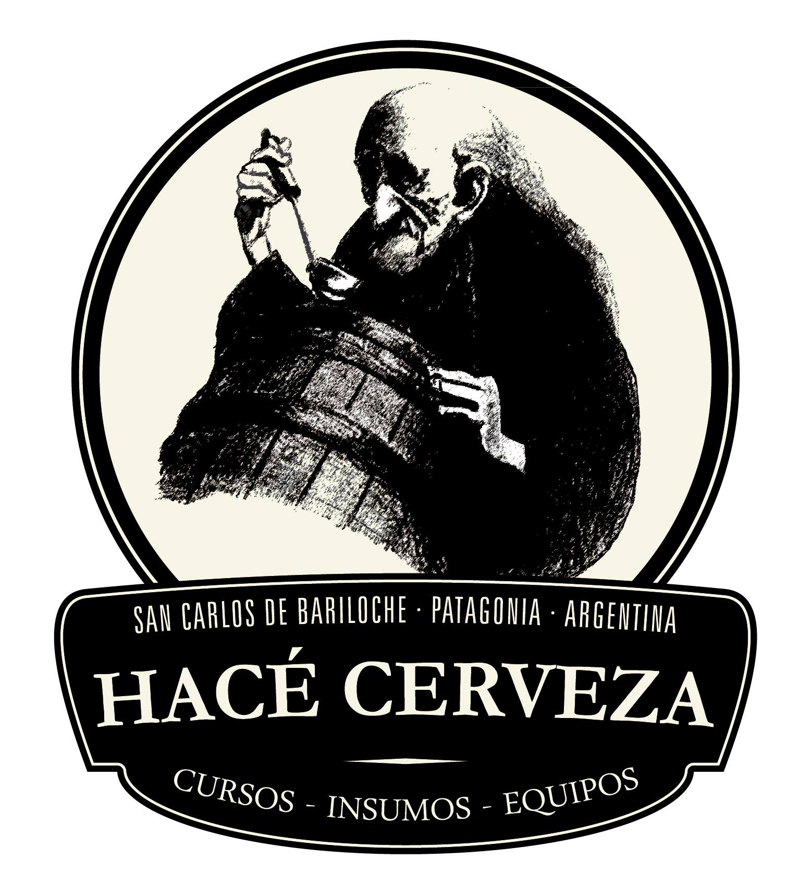
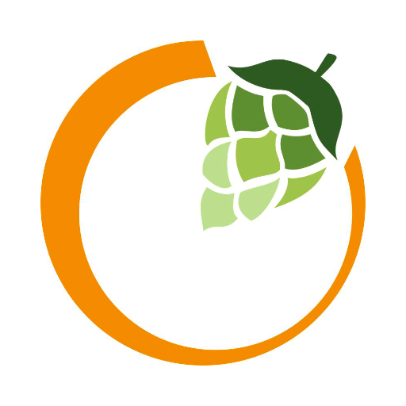

Hacé cerveza Bariloche
Abastecemos tanto a cerveceros caseros como a cervecerías. En este sitio encontraras todo lo necesario para elaborar cerveza artesanal: insumos, equipos y fechas de los próximos cursos de iniciación o perfeccionamiento en la elaboración de cerveza.
Dirección: San José 150, San Carlos de Bariloche, Río Negro.
Horario: de lunes a vernes de 10hs a 18hs
Teléfono: 0294 15-430-0749
Bariloche Beer
Te ofrecemos la oportunidad de participar en talleres teorico prácticos de dedicación exclusiva.
Dirección: Los Ñires 34, R8400 San Carlos de Bariloche, Río Negro
Horario: de lunes a sabado de 10hs a 16hs
Teléfono: 0294 428-6828
El Obrador Escuela de Arte Culinario
En El Obrador se respira emoción y autenticidad. La cocina es fuente de recursos y de inspiración para la labor creativa.
Dirección: Av. Belgrano 180, R8400 San Carlos de Bariloche, Río Negro
Horario: de lunes a viernes de 10hs a 14hs y de 16hs a 20hs
Teléfono: 0294 443-6122